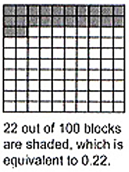
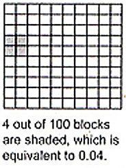
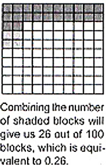

ENGAGE
The milkman rode 0.22 kilomerters to make his first delivery of milk and 0.04 kilometers to make the second delivery. How far did he travel in delivering milk?
EXPLORE
We can also show the sum of 0.22 and 0.04 using pictorial models.
  Answer The milkman rode 0.26 kilometers in all.
Without illustrations, we can solve the problem above by following these steps.
1. Write decimals in column form. Align the decimal points.
0.22
+ 0.04
----------
2. Add as in whole numbers. Add the digits belonging to the same decimal place.
0.22
+ 0.04
----------
0.26
3. Write the decimal point in the sum.
0.22
+ 0.04
----------
0.26
Answer: The milkman rode 0.26 km in all.
EXPLAIN
Addition and Subtraction of Decimals
To add decimals, align the decimal points in a straight column. Add as in whole numbers. Align the decimal point in the sum with the decimal points in the addends. Of the sum of the digits is 10 or more, regroup the decimal. Use the decimal point to separate the whole number from the decimal number in the sum. When subtracting decimals, align first the decimal point, just as addition. Regroup the decimals if necessary.
Addition of Decimals without Regrouping
Find the sum of 0.235 and 0.4
Solution
Write the decimals in column form.
0.235
+ 0.4
-----------
Put the zeros to the right of the decimal (if necessary) to have the same length
0.235
+ 0.400
-----------
Add like adding whole numbers, then affix the decimal point in the sum.
0.235
+ 0.400
-----------
0.635
Subtraction of Decimals without Regrouping
Subtract 0.15 from 0.832
Solution:
Write the decimals in column form.
0.832
- 0.15
-----------
Put extra zeros to the right of the decimal (if necessary) to have the same length.
0.832
- 0.150
-----------
Subtract like subtracting whole numbers, then affix the decimal point in the sum.
0.832
- 0.150
-----------
0.682
Answer The difference is 0.682.